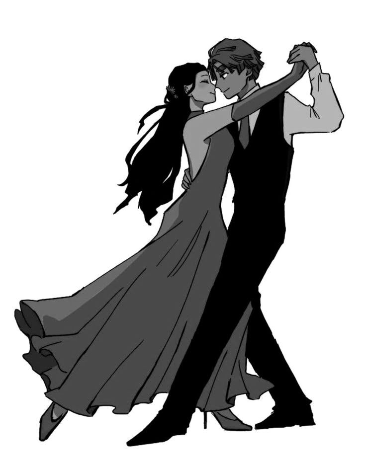

👤 Datos del Desarrollador
Mia Zaret Marin Flores
Estudiante de Programación | CBTis 142
📧 272 100 7887, miazaretmarinflores@gmail.com
🔗 **Portafolio:** github.com/https://github.com/miazaretmarinflores-sudo
Mi Trayectoria como bailarina
Soy estudiante del cbtis 142, inicie en el mundo del arte en danza desde que tengo 11 años, mi sueño es que todos los que quieran aprender la danza sean los mejores y que a donde quiera que vayan sean exitosos, ya que si yo no lo soy me sentire satisfecha de haber enseñado lo que mas me gusta y verlos bien.
He participado en varios concursos de danza y aunque no gano siempre me gusta mucho dibujar ya que es mi pasión como bailarina seguir danzando.